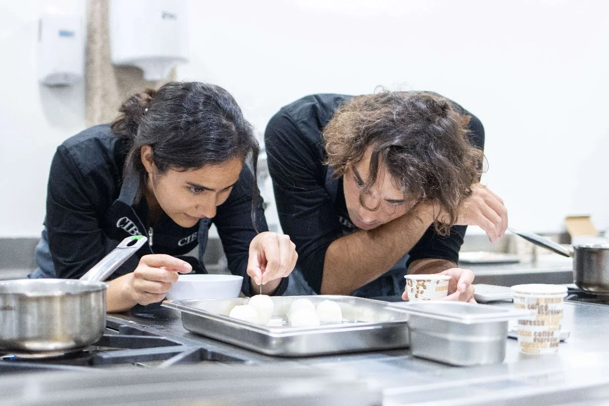

Presentación de platos y como prepararlos
La cocina es mucho más que una simple práctica diaria: es un espacio donde convergen la creatividad, la tradición y la identidad cultural. A través de cada receta se transmiten historias, emociones y saberes que han pasado de generación en generación, convirtiendo el acto de cocinar en una experiencia sensorial y authentic. En un blog de cocina, este enfoque permite no solo enseñar técnicas, sino también inspirar al lector a valorar los ingredientes, los procesos y el tiempo dedicado a cada plato.
Además, un blog gastronómico funciona como una plataforma para explorar nuevas tendencias, estilos y sabores del mundo, integrando conceptos como comfort food, slow food o fusion cuisine. Fundamentar los contenidos desde el conocimiento, la pasión y la experiencia laboral genera confianza y cercanía con la audiencia, invitándola a experimentar en la cocina y a descubrir que cocinar puede ser un acto de self-care y sharing que va más allá del resultado final.